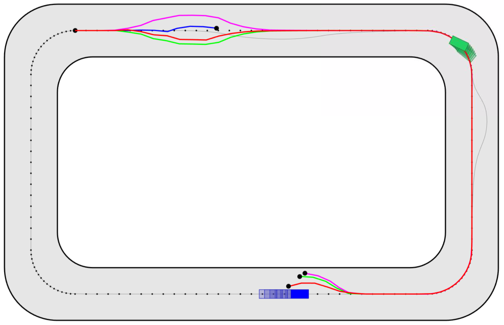
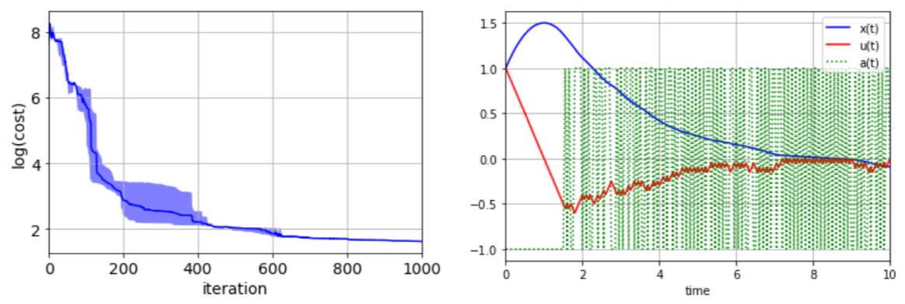
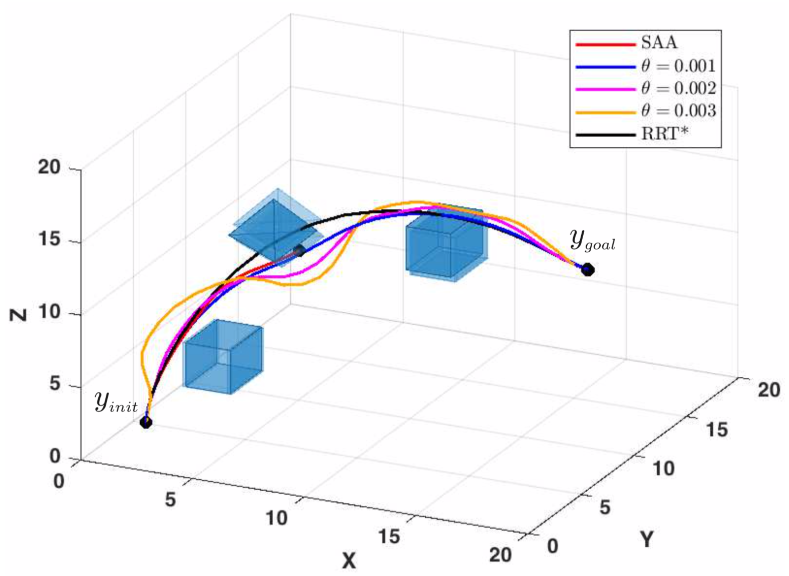

IROS2020
Learning-based distributionally robust motion control with Gaussian processes. Astghik Hakobyan, and Insoon Yang. Proceedings of the 2020IEEE/RSJ International Conference on Intelligent Robots and Systems (IROS), pp. 7667-7674, 2020.

IROS: Learning-based distributionally robust motion control with Gaussian processes
The paper “ Learning-based distributionally robust motion control with Gaussian processes “, authored by Astghik Hakobyan, and Insoon Yang, has been accepted to the IEEE/RSJ International Conference on Intelligent Robots and Systems (IROS) . This paper ...

L4DC: Hamilton-Jacobi-Bellman Equations for Q-Learning in Continuous-Time
The paper “ Hamilton-Jacobi-Bellman equations for Q-learning in continuous time “, authored by Jeongho Kim, and Insoon Yang, has been accepted to the Conference on Learning for Dynamics and Control (L4DC) . This paper introduces a ...
HJB
Hamilton-Jacobi-Bellman equations for Q-learning in continuous time. Jeongho Kim, and Insoon Yang. Proceedings of the 2nd Conference on Learning for Dynamics and Control (L4DC), pp. 739-748, 2020.

ICRA: Wasserstein Distributionally Robust Motion Planning and Control
The paper “Wasserstein distributionally robust motion planning and control with safety constraints using conditional value-at-risk”, authored by Astghik Hakobyan, and Insoon Yang, has been accepted to the IEEE International Conference on Robotics and Automation (ICRA) . ...